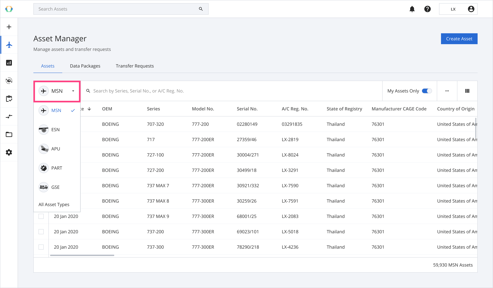

Airworthiness release shouldn't live on a sheet of paper that can be lost, smudged, or forged. eARC is the signed, tamper-evident digital form of the Authorized Release Certificate — covering the most common forms, including the FAA Form 8130-3 and EASA Form 1 — anchored on the Aviation Blockchain Network and attached to each asset's digital passport, so any counterparty can verify it in seconds.
An Authorized Release Certificate is the airworthiness approval tag that travels with a serviceable part — most commonly the FAA Form 8130-3 or the EASA Form 1 — certifying that an authorized organization released the item to an approved standard. The eARC is that same certificate captured as a signed electronic record, hashed, and bound to the part's digital passport on the Block Aero Aviation Blockchain Network.
Your authorized signatory still makes the release. eARC captures the release they sign — such as an 8130-3 or EASA Form 1 — as a structured, verifiable digital original, not a scan or a photocopy.
Each eARC is attached to the part's digital passport, so the release travels with the asset for life and never has to be reassembled from a folder of PDFs.
Buyers, lessors, MROs, and auditors confirm an eARC is authentic and unaltered against the on-chain record instantly — no phone calls, no waiting on a scan, no doubt about whether the paperwork is real.
When the release lives on paper, the whole transaction inherits its weaknesses. Buyers wait on scans, quality teams cross-reference by hand, and a single lost or questionable tag can stall a sale or ground a part.
eARC is a capability of Digital Asset Manager, built on Block Aero's eARC trace data standard. The proof is created once, at the source, and trusted everywhere after. See it in the product docs →

Your certifying staff complete the release form they use today — such as an 8130-3 or EASA Form 1 — now as a structured electronic record inside Digital Asset Manager.
Block Aero writes a cryptographic fingerprint of the eARC to the Aviation Blockchain Network and binds it to the part's digital passport — making it tamper-evident and permanent.
As the asset is sold, leased, or installed, its eARC stays attached to the passport — no rekeying, no lost folders, no gaps in the trail.
Buyers, lessors, MROs, and authorities confirm the certificate is authentic and unaltered against the on-chain record — including through #RegistryReady data packages and marketplace listings.
Any change to the certificate breaks its cryptographic fingerprint — alteration is detectable, not hidden.
eARC covers the most widely used airworthiness release forms — including the FAA Form 8130-3 and EASA Form 1 — so verified release travels with the part across jurisdictions.
Verification doesn't depend on one company's server staying online — the proof lives on the network.
The release is one element of a complete back-to-birth record, not a stray document.
Built on the eARC trace data standard and the 108-type Data Sharing Specification.
Issued and stored on a platform certified by ASA CB (Certificate BLOC-001-06-26-27). Trust Center →
eARC issuance and verification is a capability of DAM, alongside digital passports and Data Package Creation.
Explore Digital Asset ManagerAnchored releases strengthen proof-of-ownership and chain-of-custody registries.
See Asset RegistriesVerified release documentation supports compliant cross-border USM into China-registered aircraft.
About the programSee how eARC issues, anchors, and verifies airworthiness releases on the Aviation Blockchain Network. Open an account, or book a working session with our team.